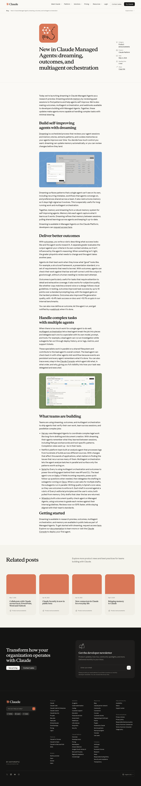
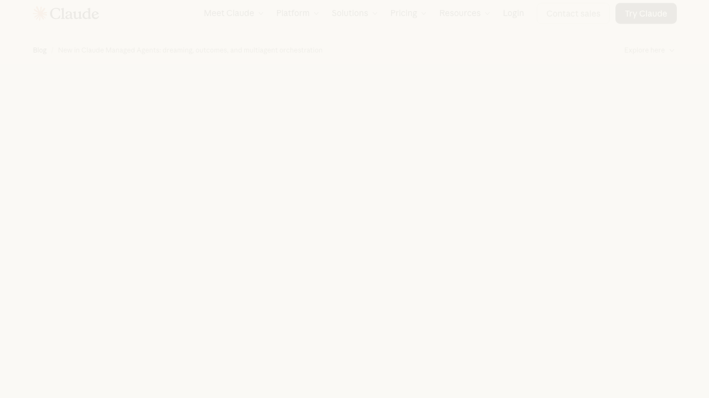

앤스로픽이 에이전트 기능 네 가지를 공개했습니다.

드리밍
비활성 시간에 경험과 메모리를 다시 정리합니다.
memory아웃컴
좋은 결과의 기준을 주고 결과물을 평가합니다.
rubric멀티에이전트
리드가 일을 쪼개고 전문 에이전트가 병렬 처리합니다.
parallel이벤트
조건이 발생하면 에이전트 작업이 자동으로 시작됩니다.
trigger이번 핵심은 더 똑똑한 챗봇이 아닙니다.
하나의 모델
입력하면 답하고, 세션이 끝나면 흐름도 끊깁니다.
single운영 시스템
기억하고, 평가하고, 나눠서 처리합니다.
system작은 제작팀
에이전트가 혼자 일하는 도구에서 팀 구조로 이동합니다.
team드리밍은 쉬는 시간에 경험을 다시 정리하는 기능입니다.

드리밍이 좋은 순간은 작업이 하루 안에 끝나지 않을 때입니다.
세션 사이에 흩어진 작업 경험을 다시 정렬합니다.
장기 프로젝트
어제의 판단과 오늘의 요청이 이어질 때 컨텍스트 손실을 줄입니다.
반복 업무
매번 같은 실수를 다시 설명하지 않고, 좋은 절차를 다음 세션에 재사용합니다.
팀 단위 규칙
개인의 취향이 아니라 팀의 작업 패턴과 리뷰 기준을 메모리로 정리합니다.
아웃컴은 에이전트에게 좋은 결과의 기준을 주는 기능입니다.
에이전트가 결과물을 만듭니다.
코드, 문서, 리포트, 답변이 여기서 나옵니다.
draft루브릭이 점검 기준을 정합니다.
정확성, 형식, 완성도 같은 기준을 명시합니다.
rubric별도 평가 모델이 채점합니다.
부족하면 다시 고치는 루프가 생깁니다.
score정답보다 기준이 중요한 작업에서 강합니다.
좋은 사용처
핵심 변화
멀티에이전트 오케스트레이션은 일을 쪼개서 병렬로 맡기는 구조입니다.
리드 에이전트
계획, 분배, 통합
로그 담당
오류 원인 분석
문서 담당
변경점 정리
메트릭 담당
수치와 추세 확인
지원 담당
고객 맥락 정리
복잡한 작업일수록 한 명이 끝까지 붙잡는 방식이 느려집니다.
빌드 로그
Log문서 변경
Docs코드 경로
Code통합 판단
Merge이벤트 트리거는 에이전트를 호출하지 않아도 일이 시작되게 합니다.
문서 업로드
새 파일이나 요청이 들어옵니다.
조건 감지
시스템이 자동으로 담당 에이전트를 깨웁니다.
후속 작업
분석, 요약, 검토, 알림이 이어집니다.
이벤트는 에이전트를 제품 안의 자동 워크플로로 바꿉니다.
업로드 후 검토
계약서나 리포트가 들어오면 검토 흐름을 시작합니다.
로그 후 알림
장애 신호가 오면 분석하고 슬랙으로 요약합니다.
렌더 후 QA
새 영상이 나오면 스냅샷과 자막 상태를 확인합니다.
네 기능은 서로 다른 축에서 에이전트를 바꿉니다.
시간 축에서 이전 경험을 다음 작업으로 연결합니다.
time품질 축에서 결과물이 기준을 통과하게 만듭니다.
quality복잡도 축에서 일을 분산하고 통합합니다.
complexity자동화 축에서 조건이 맞으면 작업을 시작합니다.
automation실제 사례는 같은 방향을 보여줍니다.

장기 법률 작업
반복 맥락을 정리해야 가치가 커집니다.
빌드 로그 분석
수많은 로그를 병렬로 나눠 봅니다.
요청 라우팅
가벼운 모델과 강한 모델을 역할별로 배치합니다.
문서 검수
기준이 분명한 작업에서 아웃컴이 어울립니다.